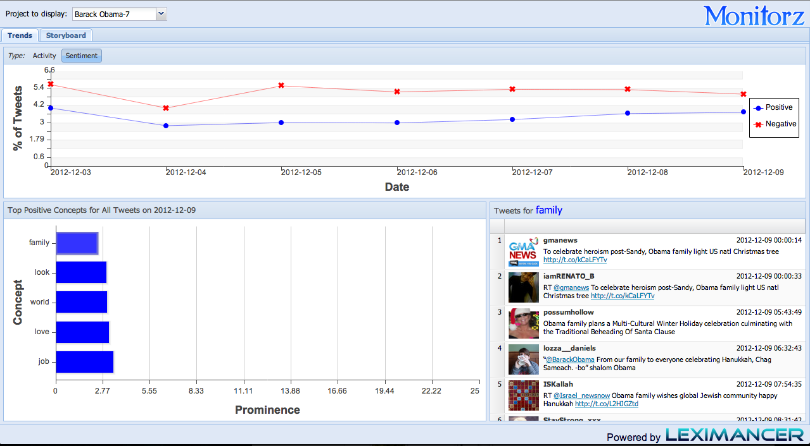
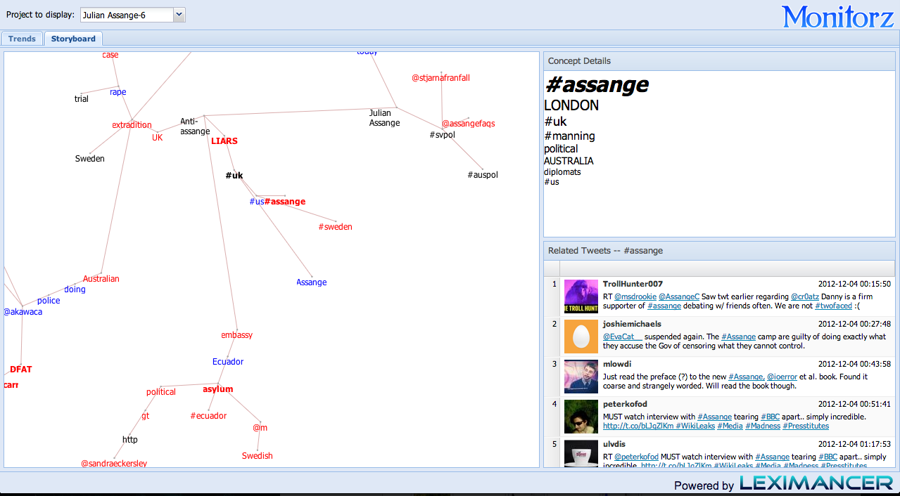
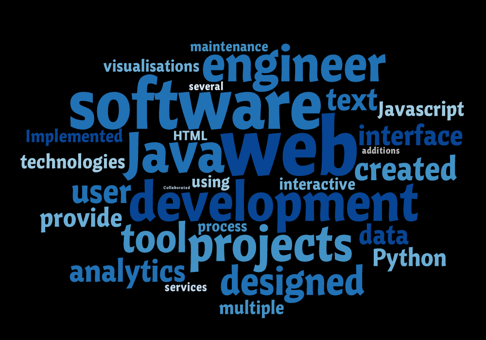
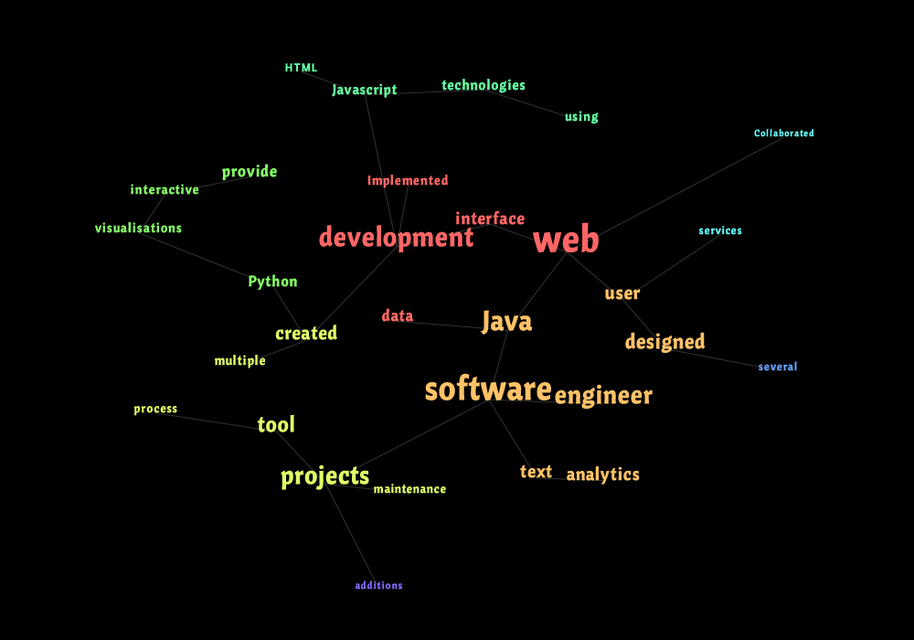

It appears you are using an old version of Internt Explorer, which does not support features required by this page. Please upgrade :)
A few words
- My passion is for building innovative products and services that enrich the user experience instead of complicating it.
- I am driven to learn how things work and to improve them.
- I will always look to challenge myself and broaden my horizons.
- My current project - a free, qualitative text analysis service - Text Is Beautiful.
- My resume as a PDF.
Some examples of my work




Interactive resume. Try clicking things!